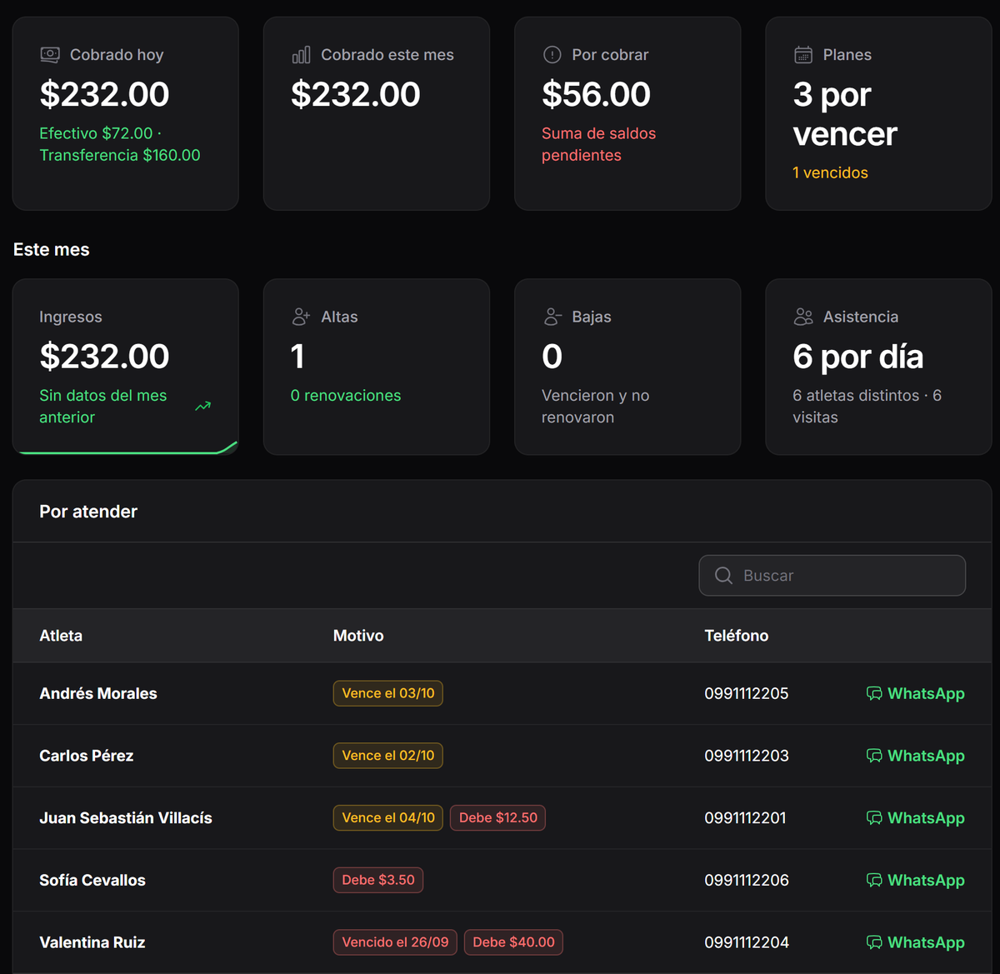
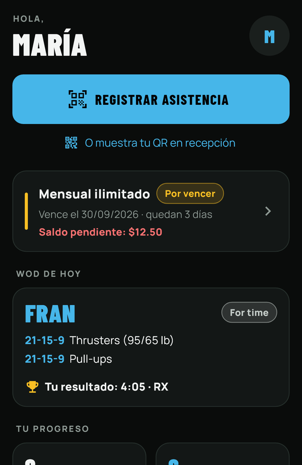

Proyecto destacado · Cliente real en producción
Valkyria — web, gestión y app para un box de CrossFit
Sistema completo para un gimnasio de Ibarra: una web que capta clientes, un panel para cobrar y administrar, y una app Android para que cada atleta siga su asistencia, sus marcas y su plan.
- Panel con roles (administración, coach, recepción) y app nativa en Flutter sobre una API Laravel.
- Caja con bitácora inalterable, recordatorios por WhatsApp y reportes del mes.
- Asistencia por QR o automática por geolocalización, comunidad de logros y notificaciones push.
- 243 pruebas automatizadas, despliegue con un comando y servidor endurecido y monitoreado.
Ver sitio en producción
Repositorio privado · demo bajo solicitud

